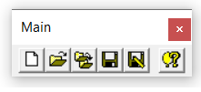
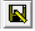

1.5.4 Main Menu
1.5.4.1 Main Toolbar
The Main Toolbar is located in the upper left corner of the parent window, as its controls affect the entire application.

The toolbar contains the following commands:

Alternatively, you can find the corresponding commands in the File command of the menu bar, which also provides access to the general settings command (not available in the toolbar).